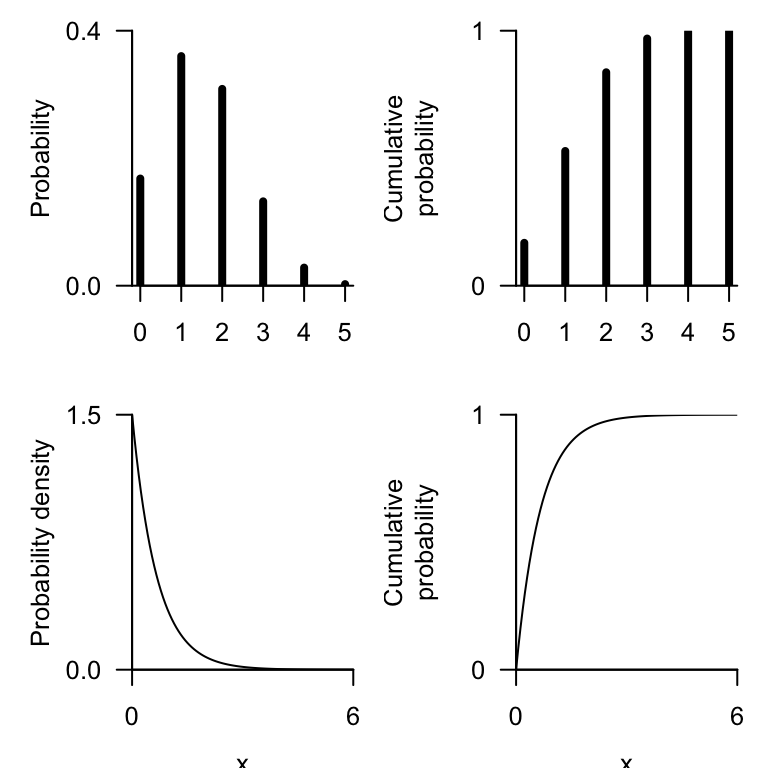
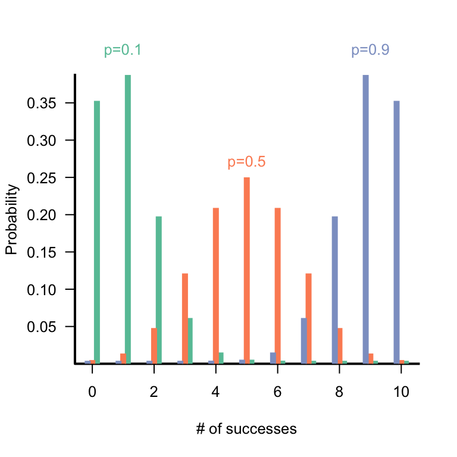
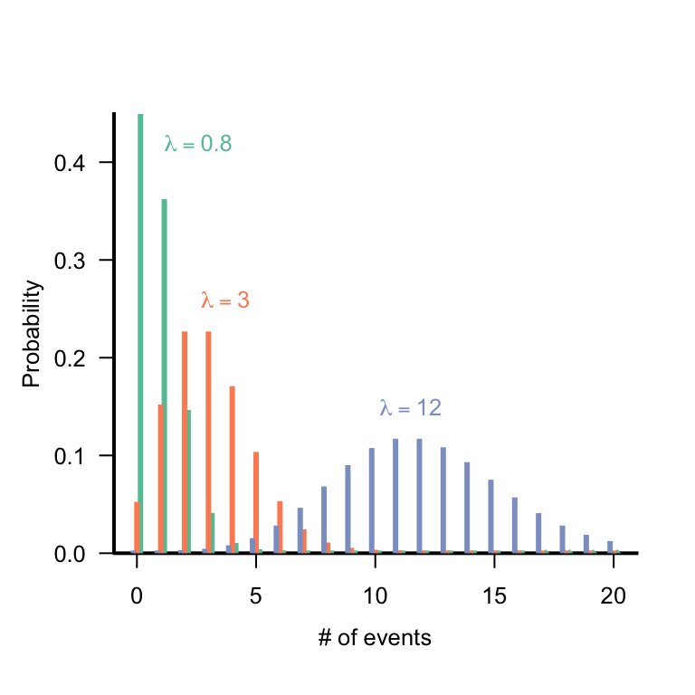
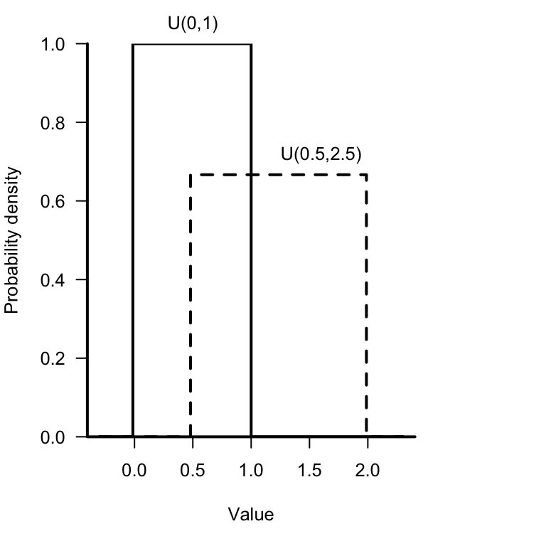
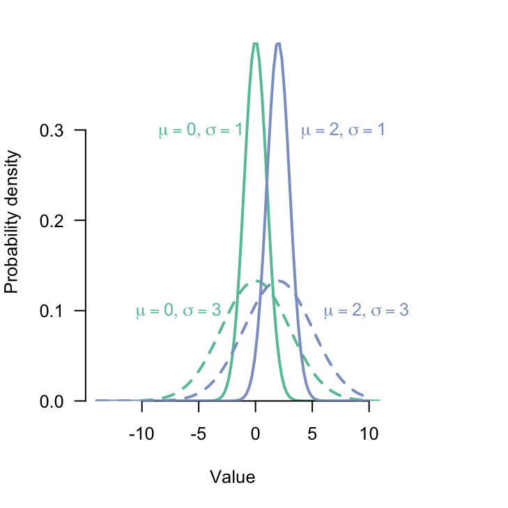
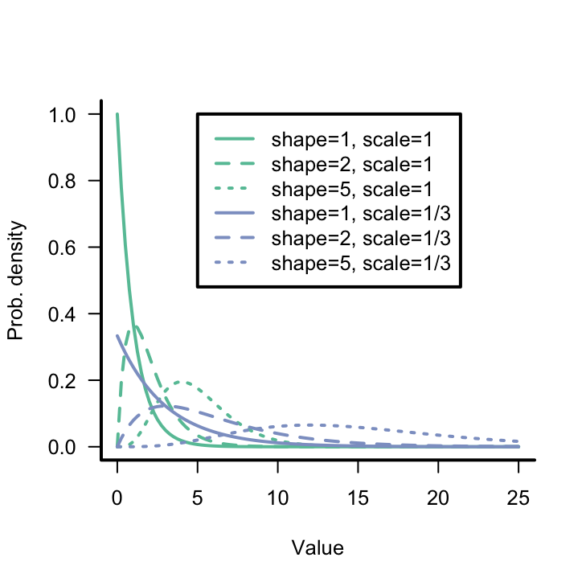
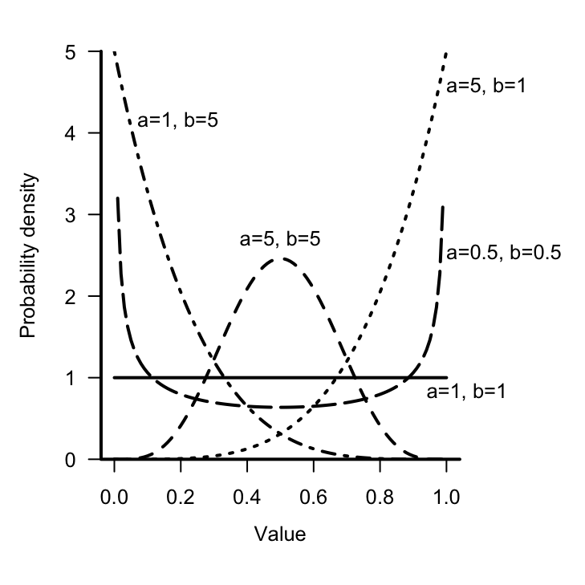
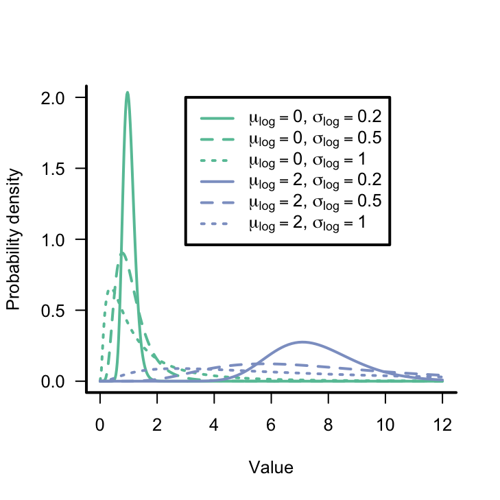
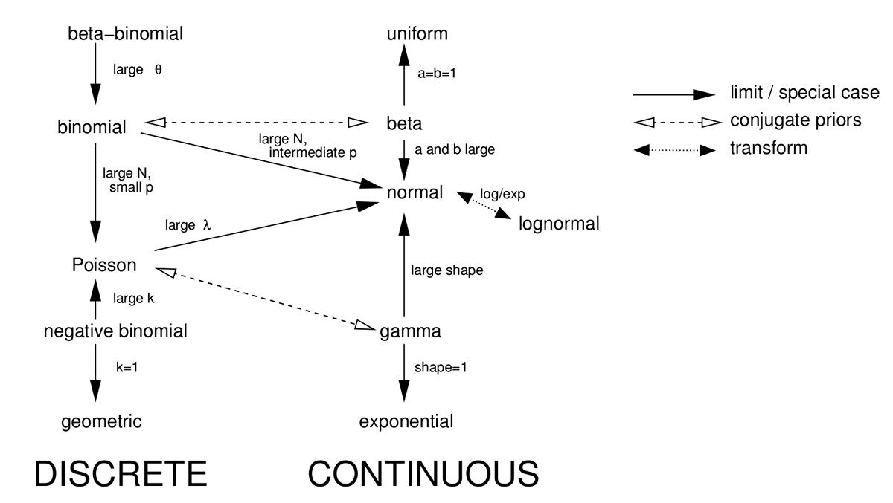
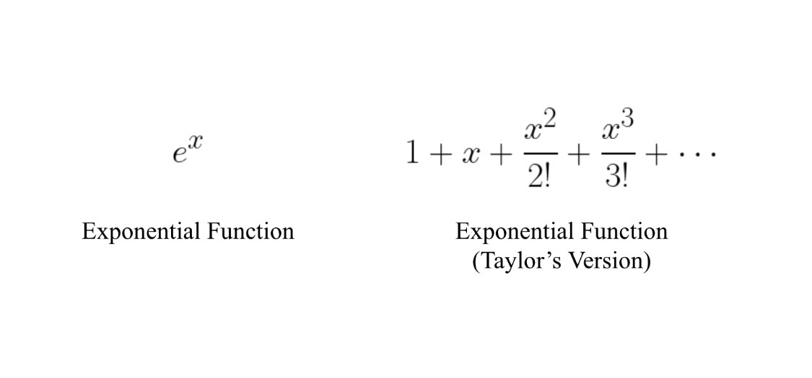

Bio Stats II : Lecture 2, Probability
Bolker 2008, Chapter 4
This Week…
1/21: Introduction, Statistical Rethinking
1/22: Lab 1
1/23: Probability review
Objectives
- Review probability laws
- Review definitions of expected value and variance of random variables
- Present common probability distributions
Why does variability matter?
Variability affects any ecological system.
Noise affects ecological data in two ways:
- measurement error
- process noise
Measurement error is variability in our measurements.
- leads to large confidence intervals and low power
Process noise (process error), variability in the system.
- demographic stochasticity
- environmental stochasticity
We are interested in understanding patterns in our data.
- use probability to describe relationships between processes and data.
Often assume that our data is generated by some stochastic process whose expected value is a function of covariates we are interested in.
Basic probability theory
The is the set of all possible outcomes that could occur.
e.g. for a regular six-sided die \[ s\{1,2,3,4,5,6\} \]
Probability of an event \(A\) is the frequency with which that event occurs.
e.g. \[ P(1) = 1/6 \]
Laws of Probability
Law of total probability
The probabilities of all possible outcomes of an observation or experiment add to 1.0 \[P(\mbox{heads})+P(\mbox{tails})=1.0\]Probability of \(A\) \(B\), or \(P(A \cup B)\)
\[P(A \cup B) = P(A) + P(B) - P(A \cap B).\]Mutually exclusive vs. independent events
two mutually exlusive events cannot be independent
mutually exclusive \(\implies P(A \cap B) = 0\)
independence \(\implies P(A \cap B) = P(A) \cdot P(B) \neq 0\)
Laws of Probability
- General multiplication rule
\[P(A_1 \cap A_2 \cap \dots \cap A_n) = P(A_1) \cdot P(A_2|A_1) \cdot P(A_3|A_1,A_2) \dots\]
- Conditional probability
\(P(A|B)\), is the probability that \(A\) happens if we know or assume \(B\) happens.
\[P(A|B) = \frac{P(A \cap B)}{P(B)}\]
Conditional probability leads to Bayes’ rule
\[P(A|B) = \frac{P(A \cap B)}{P(B)}\]
\[P(A \cap B) = P(B \cap A) = P(B|A) \cdot P(A)\]
\[P(A|B) = \frac{P(B|A) \cdot P(A)}{P(B)}\]
This is mostly termed with \(A\) being the model (hypothesis) and \(B\) being the data.
i.e. what is the probability of a hypothesis given the data.
\[P(H|D) = \frac{P(D|H) \cdot P(H)}{P(D)}\]
with \(P(D) = \sum{P(D|H) \cdot P(H)}\)
Random Variables
A random variable is a numerical valued function defined over a sample space.
The probability distribution describes how the frequency of occurrence varies across the sample space.
For discrete variables, characterized by \(f(x)\),
- the probability distribution function (discrete variables) \[f(x) = Prob(X=x)\]
(for continuous variables, \(f(x)\) is the probability density function)
Both types of variables are also described by the cumulative distribution function, \(F(x)\)
\[F(x) = P(X \le x)\]
Expected Value of Random Variable \(X\)
Discrete random variables \[\mu = E(X) = \displaystyle\sum_{i=0}^{\infty} x_i P(X=x_i)\]
Continuous random variables \[\mu = E(X) = \int_{-\infty}^{\infty} x f(x) dx\]
Variance of a Random Variable \(X\), \(E[(X-\mu)^2]\)
Discrete random variables \[Var(X) = \displaystyle\sum_{i=0}^{\infty}\left(x_i-E(x_i)\right)^2 P(X=x_i)\] Continuous random variables \[Var(X) = \int_{-\infty}^{\infty} (x_i-E(x_i))^2f(x)dx\]
In general \[Var(X) = E(X^2) - (E(X))^2 = E((X-\mu)^2)\]
Variances are additive.
\[Var(X\pm Y) = Var(X) + Var(Y) \pm 2Cov(X,Y)\]
The standard deviation of a distribution is \(\sqrt{Var}\)
The coefficient of variation (CV) is \(\sqrt{Var}/\mu\)
Summary of probability distributions
Binomial
Describes the number of successes from a fixed number of trials.
Two possible outcomes on each trial, success or failure.
Probability of success is the same in each trial.
Range: discrete, \(0 \le x \le N\)
Distribution: \[\binom{N}{x} p^x (1-p)^{N-x}\]
R: dbinom pbinom qbinom rbinom
Parameters:
- \(p\) [real, 0-1], probability of success [prob]
- \(N\) [positive integer], number of trials [size]
Mean: \(Np\)
Variance: \(Np(1-p)\)
CV: \(sqrt{(1-p)/(Np)}\)
Conjugate prior: Beta
Binomial

Multinomial
Extension of binomial trials to three or more possible outcomes.
\(X = (X_1,X_2,\dots,X_k)\)
Range: discrete, \(0 \le x_i \le N\)
Distribution: \[P(X_1=x_1,X_2=x_2,\dots,X_k=x_k) = \binom{N}{x_1,x_2,\dots,x_k} \displaystyle\prod_{i=1}^{k} p_{i}^{x_i}\]
R: dbinom pbinom qbinom rbinom
Parameters:
- \(p_i\) [real, 0-1], \(\displaystyle\sum_{i=1}^{k}p_i=1\)
- \(N\) [positive integer], number of samples
\(E(X_i)=Np_i\)
\(Var(X_i)=Np_i(1-p_i)\)
\(Cov(X_i,X_j) = -Np_ip_j\) , \(i \ne j\)
Poisson
Describes events which occur randomly and independently in time.
Limit of a binomial distribution in which:
\(N \to \infty, p \to 0\) while \(Np=\mu\) is fixed.
Distribution of “rare events” (i.e., \(p \to 0\)).
Range: discrete (\(0 \le x\))
Distribution: \[\frac{e^{-\lambda} \lambda^n}{n!} \textbf{or} \frac{e^{-r t} (rt)^n}{n!}\]
R: dpois, ppois, qpois, rpois
Parameters: \(\lambda\) (real, positive), expected number per sample [lambda] or \(r\) (real, positive), expected number per unit effort, area, time, etc. ()
Mean: \(\lambda\) ( \(rt\))
Variance: \(\lambda\) ( \(rt\))
CV : \(1/\sqrt{\lambda}\) ( \(1/\sqrt{rt}\))
Conjugate prior: Gamma
Poisson

Negative Binomial
For binomial trials, the number of failures before \(n\) successes.
In ecology, most often used because it is discrete like the Poisson but the variance can be greater than the mean (overdispersed).
Range: discrete, \(x \ge 0\)
Distribution:
\[P(X=x) = \frac{(n+x-1)!}{(n-1!) x!} p^n (1-p)^x\] \[\textbf{or } \frac{\Gamma(k+x)}{\Gamma(k) x!} (k/(k+\mu))^k (\mu/(k+\mu))^x\]
Parameters:
\(p\) (\(0<p<1\)) probability per trial [prob]
\(\mu\) (real, positive) expected number of counts [mu]
\(n\) (positive integer) number of successes awaited [size]
\(k\) (real, positive), overdispersion parameter [size]
(= shape parameter of underlying heterogeneity)
Negative Binomial
R: dnbinom, pnbinom, qnbinom, rnbinom
Mean: \(\mu=n(1-p)/p\)
Variance: \(\mu + \mu^2/k= n(1-p)/p^2\)
CV: \(\sqrt{\frac{(1+\mu/k)}{\mu}} = 1/\sqrt{n(1-p)}\)
Conjugate prior: No simple conjugate prior (Bradlow et al. 2002)
To use the ‘ecology’ parameterization in R you must name mu explicitly.
The negative binomial is also the result of a Poisson sampling process where \(\lambda\) is Gamma-distributed.
Negative Binomial (\(\mu = 2\) all cases)

Continuous Probability Distributions
Uniform distribution
Constant probability across a range with limits \(a\) and \(b\)
Standard uniform, \(U(0,1)\), frequently used as building block.
Range: \(a \le x \le b\)
Distribution: \(1/(b-a)\)
R: dunif, punif, qunif, runif
Parameters: minimum (\(a\)) and maximum (\(b\)) limits (real)
[min, max]
Mean: \((a+b)/2\)
Variance: \((b-a)^2/12\)
CV: \((b-a)/((a+b) \sqrt{3})\)
Uniform distribution

Normal Distribution
Arises from adding things together.
Sum of a large number of independent samples from the same distribution is approximately normal.
Limit of many distributions (binomial, Poisson, negative binomial, Gamma).
Range: all real values
Distribution: \(\frac{1}{\sqrt{2 \pi} \sigma} \exp\left(-\frac{(x-\mu)^2}{2 \sigma^2}\right)\)
R: dnorm, pnorm, qnorm, rnorm
Parameters:
- \(\mu\) (real), mean [mean]
- \(\sigma\) (real, positive), standard deviation [sd]
Mean: \(\mu\)
Variance: \(\sigma^2\)
CV: \(\sigma/\mu\)
Conjugate prior: Normal (\(\mu\)); Gamma (\(1/\sigma^2\))
Normal distribution

Gamma
Distribution of waiting times until a certain number of events occurs.
Continuous counterpart to the negative binomial.
Gamma is very useful. Continuous positive variable with large variance and (possible) skew.
Range: positive real values
R: dgamma, pgamma, qgamma, rgamma
Distribution: \(\frac{1}{s^a \Gamma(a)} x^{a-1} e^{-x/s}\)
Parameters:
\(s\) (real, positive), scale: length per event [scale]
\(r\) (real, positive), rate = \(1/s\); rate at which events occur [rate]
\(a\) (real, positive), shape: number of events [shape]
Mean: \(as\) or \(a/r\)
Variance: \(as^2\) or \(a/r^2\)
CV: \(1/\sqrt{a}\)
Gamma

Beta
Continuous distribution related to the binomial.
Distribution of probability of success in a binomial trial with \(a-1\) successes and \(b-1\) failures.
Very useful in modeling probabilities or proportions.
Range: real, 0 to 1
R: dbeta, pbeta, qbeta, rbeta
Density: s\(\frac{\Gamma(a+b)}{\Gamma(a)\Gamma(b)} x^{a-1}(1-x)^{b-1}\)
Parameters:
- \(a\) (real, positive), shape 1: number of successes +1 [shape1]
- \(b\) (real, positive), shape 2: number of failures +1 [shape2]
Mean: \(a/(a+b)\)
Mode: \((a-1)/(a+b-2)\)
Variance: \(ab/((a+b)^2)(a+b+1)\)
CV: \(\sqrt{(b/a)/(a+b+1)}\)
Beta

Lognormal
Not a continuous analogue or limit of some discrete distribution.
Justification: as for normal, but for product of many iid variables.
Used in many situations where Gamma also fits, continuous, positive distribution with long tail or variance > mean.
Range: positive real values
R: dlnorm, plnorm, qlnorm, rlnorm
Density: \(\frac{1}{\sqrt{2 \pi} \sigma x} e^{-(\log x - \mu)^2/(2 \sigma^2)}\)
Parameters:
- \(\mu\) (real): mean of the logarithm [meanlog]
- \(\sigma\) (real): standard deviation of the logarithm [sdlog]
Mean: \(\exp(\mu+\sigma^2/2)\)
Variance: \(\exp(2 \mu + \sigma^2) (\exp(\sigma^2)-1)\)
CV: \(\sqrt{\exp(\sigma^2)-1}\) (\(\approx \sigma\) when \(\sigma<1/2\))
Lognormal

Relationships among distributions

Other common distributions
Discrete
- Geometric (negative binomial with \(k=1\))
- Beta-binomial (binomial but with \(p\) being beta distributed)
- Hypergeometric (useful for sampling without replacement, finite population)
- Multivariate hypergeometric (similar to the multinomial)
Continuous
- Exponential (distribution of waiting times for a single event)
- Pareto (quantity whose log is exponentially distributed, power laws!)
- Chi square (distribution of a sum of squared standard normals)
- Student’s t (ratio of a standard normal and the square root of a scaled chi square)
- F (ratio of two scaled chi-squares)
- Dirichlet (generalization of beta, for a vector that must sum to 1)
- Wishart (generalization of gamma, for a symmetric non-negative definite matrix)
Delta Method
Calculating expected values and variances of (nonlinear) functions of continuous (differentiable) random variables using Taylor series expansion.

Delta Method
Calculating expected values and variances of (nonlinear) functions of continuous (differentiable) random variables using Taylor series expansion.
Let \(x_i\) be a random variable with mean \(\mu_i(i=1,\dots,n)\). Given some function \(g(x_1,x_2,\dots,x_n)\), say, \(g\binom{x}{\sim}\), then
- \(E\left(g\binom{x}{\sim}\right) \doteq g\binom{\mu}{\sim} + \frac{1}{2}\displaystyle\sum_{i=1}^{n}Var(X_i)\left(\frac{\partial_{g}^{2}}{\partial x_{i}^{2}}\right)_{|\mu}+\displaystyle\sum_{i<j}\sum Cov(x_i,x_j)\left(\frac{\partial_{g}^{2}}{\partial x_{i} \partial x_{j}}\right)_{|\mu}\)
\(Var\left(g\binom{x}{\sim}\right) \doteq \displaystyle\sum_{i=1}^{n}Var(x_i)\left(\frac{\partial_{g}}{\partial x_{i}}\right)_{|\mu}^{2}+ 2 \displaystyle\sum_{i<j}\sum Cov(x_i,x_j)\left(\frac{\partial g}{\partial x_{i}}\right)_{|\mu} \left(\frac{\partial g}{\partial x_{j}}\right)_{|\mu}\)
\(Cov\left[g\binom{x}{\sim},h\binom{x}{\sim}\right] = \displaystyle\sum_{i}\sum_{j} Cov(x_i,x_j)\left(\frac{\partial g}{\partial x_{i}}\right)_{|\mu} \left(\frac{\partial g}{\partial x_{j}}\right)_{|\mu}\)
\(|\mu\) denotes evaluation of derivative at the values of \(\mu\).
Next Time…
1/28: Data exploration, checking
1/29: Lab 2
1/30: Linear regression review